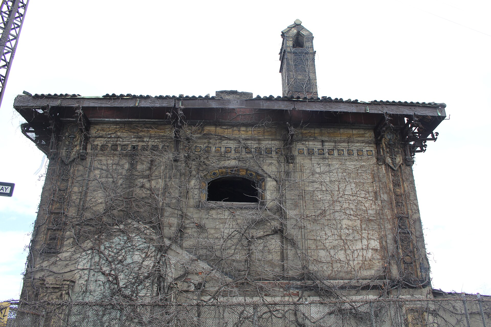

Hibernica Dispensary Turns Two in Pelham Bay: Re-Entry Hiring and Bronx-Wide Delivery
The brothers behind the Westchester Avenue equity shop built a staff from a re-entry program and a delivery zone covering the whole borough. Year three brings new pressure.

Key takeaways
- Hibernica opened April 20, 2024, at 3220 Westchester Ave and celebrated two years with an April 17-20, 2026 anniversary run.
- About 70 percent of its staff came through Housing Works' CREATE re-entry program.
- Since Sept. 5, 2024, it has delivered across the whole Bronx and southern Westchester.
- Seventeen of 23 open Bronx stores hold CAURD equity licenses, the highest share of any borough.
- New East Bronx competition, falling prices and unlicensed shops are the store's year-three pressures.
On April 20, 2024, the most on-the-nose date on the cannabis calendar, Hibernica opened its doors at 3220 Westchester Ave in Pelham Bay. It was one of the Bronx's first handful of legal dispensaries, arriving in a borough that had only a few licensed stores and was crowded with unlicensed smoke shops.
Two years later, the store is still here, still run by the same two brothers, and still doing the two things that set it apart: hiring heavily from a re-entry program and delivering across the entire borough. It marked the milestone with a four-day anniversary run from April 17 to 20, 2026, with pop-ups and a Yankees ticket raffle. Here is what the anniversary says about the store, about equity licensing and about what the next two years could look like for small Bronx shops.
Two brothers on Westchester Avenue
Hibernica is owned by brothers Jonathan Guerrero and Chris Ortiz. It operates under a Conditional Adult-Use Retail Dispensary (CAURD) license, the state's equity license for people with past cannabis convictions and their families, Office of Cannabis Management licensing records show.
Its location matters. Pelham Bay sits at the far eastern edge of the borough, a long way from the South Bronx cluster on Third Avenue and the Arthur Avenue strip in Belmont. With Upscale Cannabis opening in Pelham Gardens on Aug. 7, the East Bronx now has eight licensed stores, the most of any part of the borough, and only one of them, Hush in Allerton, predates Hibernica, as our Bronx dispensary map shows.
| Hibernica at a glance | |
|---|---|
| Address | 3220 Westchester Ave, Pelham Bay |
| License | CAURD (equity) |
| Opened | April 20, 2024 |
| Owners | Brothers Jonathan Guerrero and Chris Ortiz |
| Delivery | The whole Bronx plus southern Westchester, since Sept. 5, 2024 |
| Staffing | About 70 percent from Housing Works' CREATE re-entry program |
| Giving | Donates to the Bronx Community Foundation |
| Website | shophibernica.com |
A hiring model built on second chances
The number that stands out at Hibernica is 70. That is roughly the percentage of Hibernica's staff who came through Housing Works' CREATE re-entry program.
That matters because of what legalization was supposed to fix. New York's 2021 legalization law was pitched in large part as repair for communities hit hardest by cannabis enforcement. The CAURD license put that idea into the ownership column by reserving early licenses for people with past convictions. Hibernica extends it to the payroll. A store where most workers are coming home from the system is doing the kind of repair that does not show up in a sales report.
It is also a practical model. New York now automatically expunges past convictions for conduct that is legal today, but people coming home still need work, and a job behind a licensed counter in a regulated industry is a real credential.
A store where most workers are coming home from the system is doing the kind of repair that does not show up in a sales report.
The store also donates to the Bronx Community Foundation. That links it to a larger reinvestment story: the state has been sending cannabis tax dollars back into neighborhoods through community grants, including a youth program in the South Bronx we covered in where Bronx cannabis tax dollars go.
Delivering the whole borough
Since Sept. 5, 2024, Hibernica has delivered across the entire Bronx and into southern Westchester. That is a big footprint for one storefront, and in this borough it fills a real gap. With 23 licensed stores for about 1.4 million residents, neighborhoods like Soundview, Highbridge and City Island have no licensed store at their own address. For shoppers there, a legal delivery service is the difference between a tested product and whatever the corner shop is selling.
How legal delivery works
State rules are strict. Under the Office of Cannabis Management's delivery rules for consumers:
- Only employees of the licensed store can deliver, and only during store hours.
- The driver checks your photo ID at the door; you must be 21 or older.
- Each delivery is capped at 3 ounces of flower or 24 grams of concentrate per day.
- Drop-offs go to homes and private businesses, never parks, schools, houses of worship or vehicles.
Hibernica is not the only option. Guardian Wellness, SESH, Smoking Scholars, Hush, Bleu Leaf and Two Buds also offer delivery; our Bronx weed delivery guide compares them.
What CAURD means, and why the Bronx leans on it
The idea
CAURD licenses are reserved for people with past cannabis convictions and their families. The goal is to put legal storefronts in the hands of the people the drug war hit hardest, rather than only well-capitalized chains.
The Bronx numbers
Of the 23 licensed adult-use stores open in the Bronx, 17 hold CAURD licenses. That is 74 percent, the highest share of any borough. Hibernica is part of an equity cohort that includes CONBUD, run by formerly incarcerated founders Coss Marte and Mario Ramos, and Bronx Joint in Hunts Point, backed by the state's Social Equity Investment Fund. Other equity-licensed Bronx dispensaries, including Buddiez Bronx Cannabis Dispensary in Melrose, which sponsors the Free Press, have opened since.
Year three: the pressures ahead
More competition nearby
The East Bronx has filled in fast. Say Less opened in Throggs Neck in December 2025, followed by Victory Dispensary a few blocks away on East Tremont Avenue in May 2026, after a neighborhood fight; read more on that two-stores-one-block fight. Weed Land opened on Castle Hill Avenue in June, and Upscale Cannabis opened in Pelham Gardens on Aug. 7, 2026, making it the borough's newest store and the fourth East Bronx opening in under nine months.
Falling prices
Statewide, per-unit prices fell about 7 percent from January to June 2026, according to the Office of Cannabis Management's July 2 presentation to the Cannabis Control Board. The state had 683 adult-use dispensaries by June, and the median store brought in about $2.6 million a year. Cheaper products are good news for shoppers; for a small independent store paying Bronx rent, margins get tighter.
The illegal shop down the road
In June, the Sheriff's Office seized more than 800 pounds of product from Indica Diamond, an unlicensed shop at 1334 E Gun Hill Rd in Pelham Gardens that allegedly cut its city padlock and resumed sales. It has never held a state license. Every sale at a shop like that is one a licensed neighbor does not make. Read the Indica Diamond story.
Two years in, Hibernica is a test case for whether an equity store can compete on convenience and community at the same time. If you are in Pelham Bay, it is a licensed option on your block. If you are anywhere else in the borough, it may be one delivery away. Either way, keep it at home: parks, including nearby Pelham Bay Park, are smoke-free by law, and so is every car.
Frequently asked questions
Where is Hibernica dispensary?
Hibernica is at 3220 Westchester Ave in Pelham Bay, in the East Bronx. It opened on April 20, 2024.
Does Hibernica deliver?
Yes. Hibernica has delivered across the whole Bronx and southern Westchester since Sept. 5, 2024. Confirm your address at checkout, and have a 21+ photo ID ready.
What is a CAURD license?
CAURD stands for Conditional Adult-Use Retail Dispensary. It is New York's equity license for people with past cannabis convictions or their family members, and 17 of the Bronx's 23 open stores hold one.
Who owns Hibernica?
Hibernica is owned by brothers Jonathan Guerrero and Chris Ortiz, who opened it under a CAURD equity license in April 2024.